Insight 01
Phones aren't the barrier; prompting is.
Students in villages had smartphones. They just didn't know what to ask a chatbot, or how.
03 · Case study · EdTech
তোমার এআই শিক্ষক · “your AI teacher”
Designing an AI teacher for Bangladeshi students and teachers who own smartphones but have never learned to write a prompt.
Live beta
porAI is live for grades 3–12 on the NCTB curriculum, in Bangla and English. It opens in a new tab.
Visit por-ai.com ↗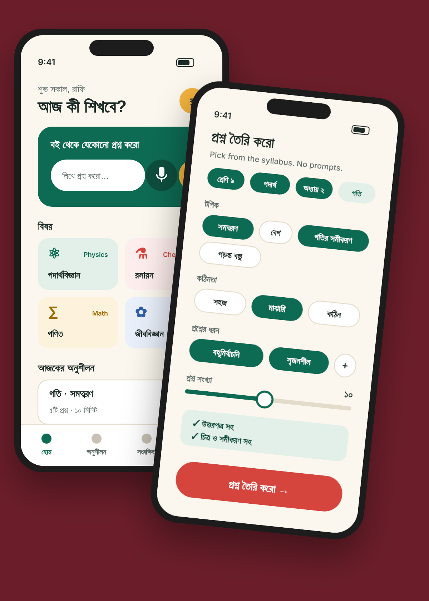
01
Students have phones. What they don't have is a way in.
porAI is an AI teacher for Bangladeshi students in grades 3–12, built on the national (NCTB) curriculum, in Bangla and English. Students can photograph a problem from their textbook, or ask by voice, and get a step-by-step answer at their level. Teachers can generate unlimited exam-style questions, with equations, figures and an answer key, by picking a chapter instead of writing a prompt.
I co-founded porAI and led the product and UX work: field research, personas, flows, wireframes and the visual design, alongside our working Streamlit prototype.
02
A test-prep system that recycles the same guidebooks, and AI tools that only work if you speak “prompt”.
In much of Bangladesh, teachers build class tests from the same few guidebooks every term, so students memorise answers instead of learning concepts. Families who can afford it pay for private tutors; many can't afford one for every subject.
Generic chatbots look like the answer, but they assume the user knows what to type, they default to English, and they don't know which chapter of which NCTB book a student is on. Equations and diagrams, the heart of science exams, come out unreliable or missing.
03
We started in classrooms, not in Figma.
We surveyed students in four schools, including village schools, and talked with teachers about how they prepare tests. I also leaned on something I grew up with: my family includes a retired high-school teacher, so the rhythm of exam season was familiar long before this project.
04
Insight 01
Students in villages had smartphones. They just didn't know what to ask a chatbot, or how.
Insight 02
Setting a fresh test with figures and an answer key takes an evening. Anything that gives that evening back gets attention.
Insight 03
Paying for tutors is normal, and parents make that call. A trial aimed at parents and teachers made more sense than marketing to students.
Insight 04
Everyone navigates by class → subject → chapter. Our interface should too.
How might we let a student get unstuck on a textbook problem without typing a single prompt?
How might we turn a teacher's evening of test-writing into a few taps?
05
Three people, one phone.
Proto-personas built from the survey and teacher conversations. Rafi uses porAI, Nasrin teaches with it, and Abdul decides whether the family pays for it.
06
Where a teacher's evening goes.
Mapping Nasrin's test-writing routine showed the low point clearly: drawing figures and working out the answer key by hand. That became the feature we had to get right first.
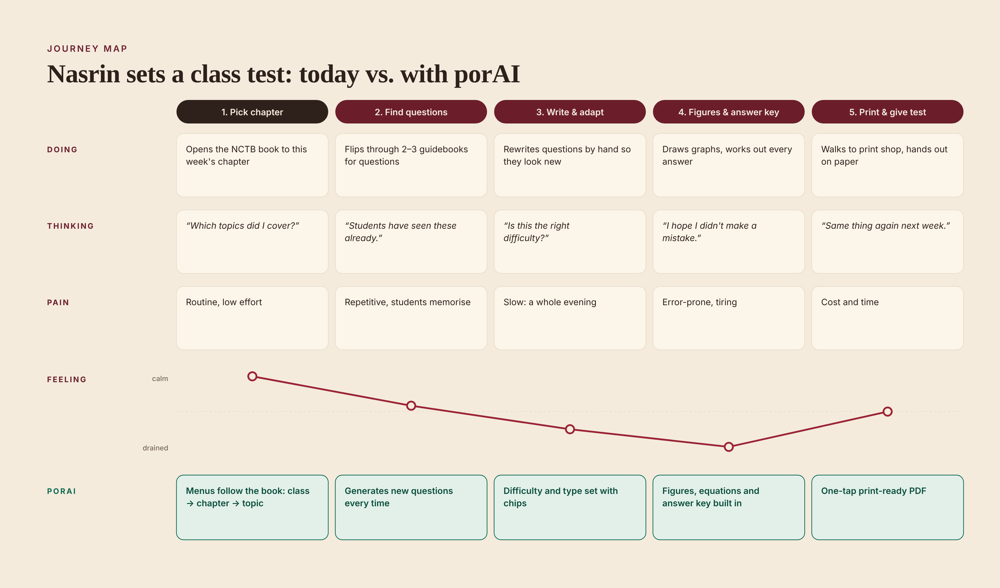
07
Five rules we didn't break.
08
One door, two paths.
Onboarding asks one question that matters, who you are, and sends students and teachers to home screens built for what they came to do.
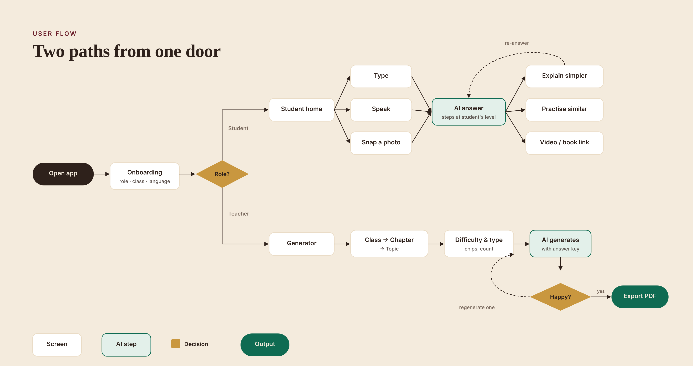
09
Structure before style.
Our first working version was a Streamlit prototype: great for proving the AI, but built around a chat box, the very thing users told us they couldn't use. The wireframes moved every core action out of the text field and into buttons, chips and menus.
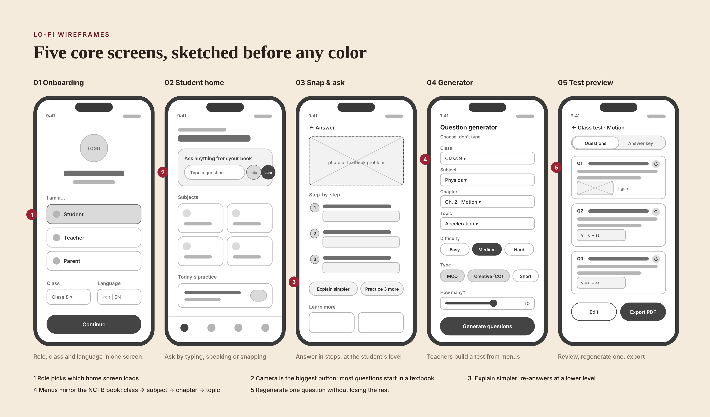
10
What we chose, and what it cost.
Most student questions start on a printed page, so “snap a photo” is the largest button on the home screen, ahead of typing.
Trade-off: image questions cost more to process than text, and blurry photos need a graceful retry.
The generator is a set of syllabus menus and chips. A teacher can't write a bad prompt because she never writes one.
Trade-off: less flexibility for power users, so a free-text field may come back later as an advanced option.
Teachers liked most of a generated test but wanted to swap one or two items. Each question gets its own regenerate button.
Trade-off: more AI calls per test, but far less frustration.
Tests in Bangladeshi classrooms are on paper. The flow ends in a PDF with a separate answer key, not a share link.
Trade-off: layout work for equations and figures in Bangla documents.
Instead of asking students to rephrase, one button re-answers at a lower level, with more steps and simpler words.
Trade-off: we need a reliable sense of “level” per class, which the curriculum structure gives us.
11
Exercise-book paper, the flag's green, a red-pen accent.
The palette borrows from what students already associate with school: off-white khata paper, the green of the flag, and the red pen a teacher marks with. The red is reserved for one main action per screen. Hind Siliguri carries Bangla and Latin in one family, so mixed-language screens stay even.
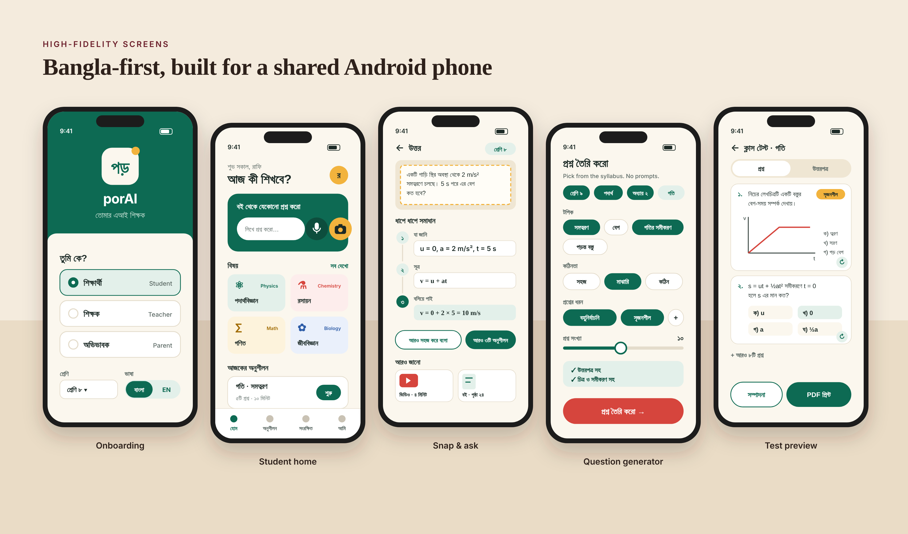
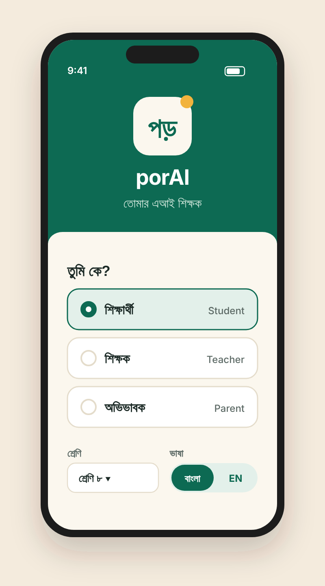
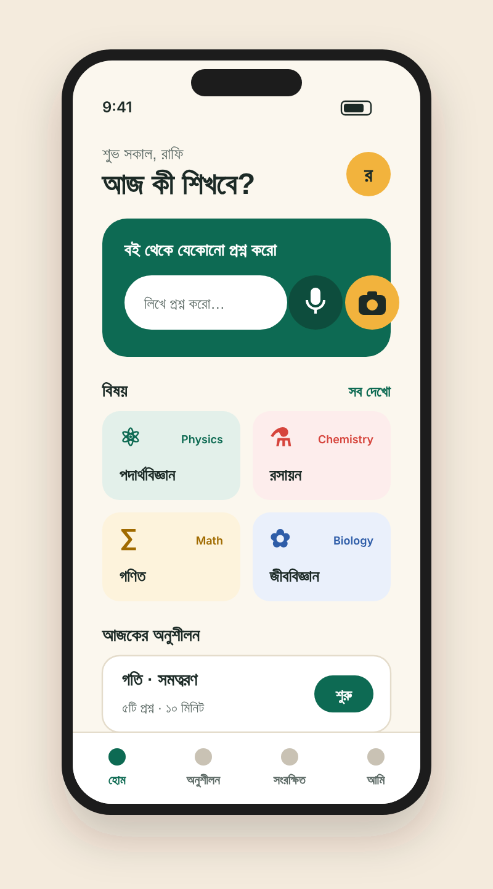
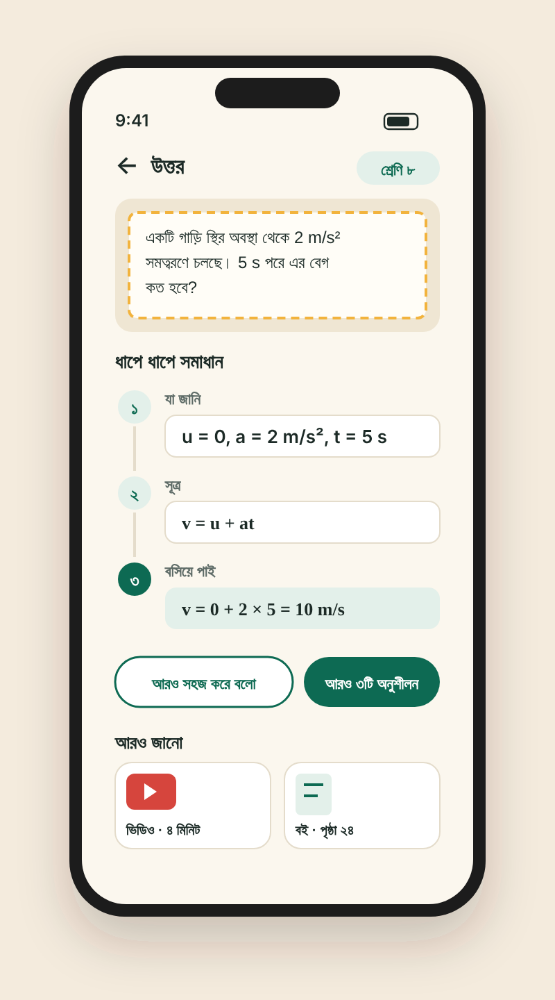
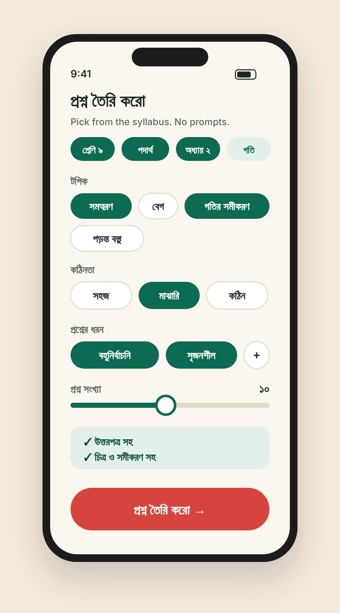
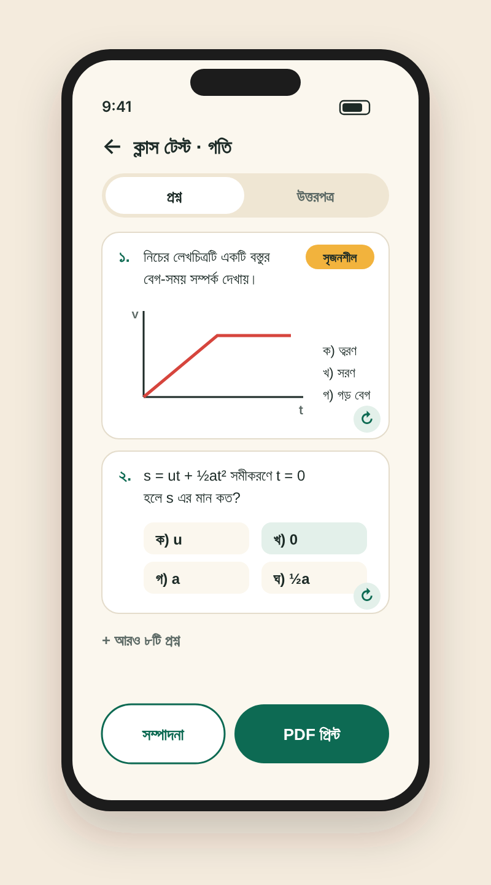
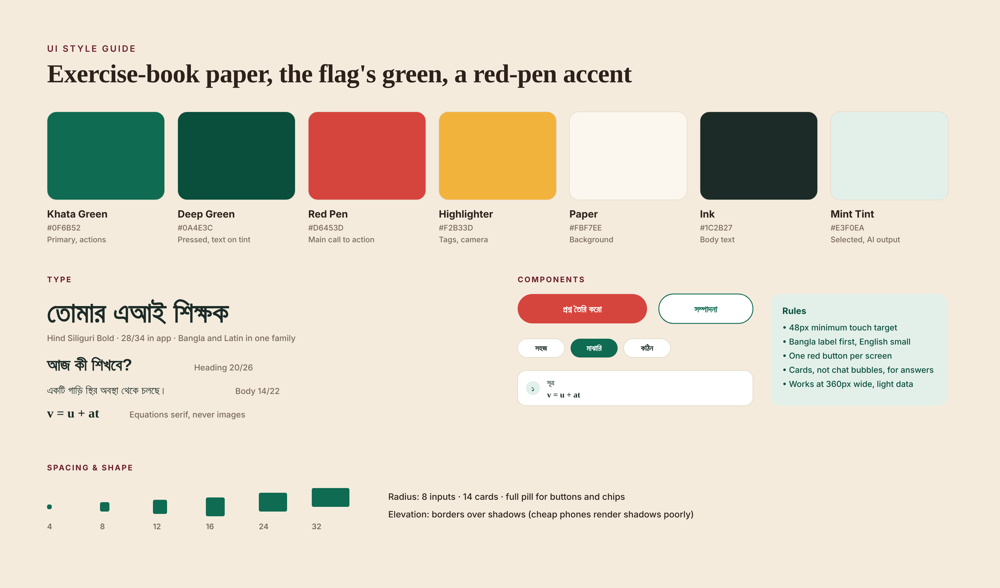
12
From survey to a live beta.
Time for a teacher to produce a printable test, share of student questions that start from a photo, and how often “explain simpler” is tapped, a signal of whether answers are pitched at the right level.
The hardest design problem in an AI product wasn't the AI. It was removing the blank text box. Every time we replaced typing with choosing, the people we were designing for got further on their own.